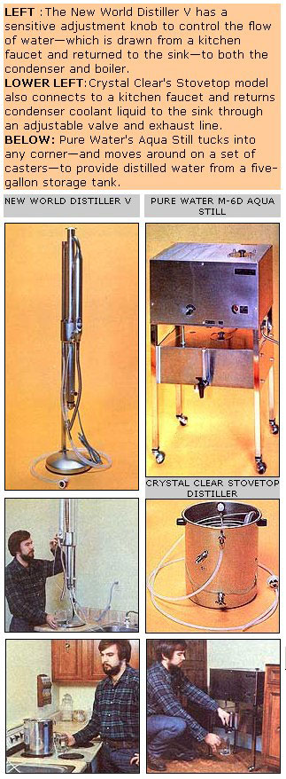
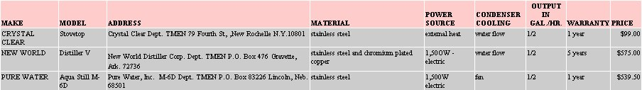

The use of chlorine disinfectant in water treatment plants has-since the turn of the century-guaranteed that most Americans who are served by municipal water supplies don't have to worry about taking in disease-causing bacteria when they drink a glass of H20. Furthermore, folks in this nation who count on wells or springs for drinking water are usually careful to have the supply checked-on a regular basis-for potability. Indeed, as recently as a decade ago it was "common knowledge" that the water consumed by the majority of U.S. citizens was the best in the world!
Unfortunately, recent studies have indicated that there's far more to water quality than meets the eyes or nose: Sterility, as we are now discovering, is not the same as purity. For example, the heavy use of fertilizers and pesticides in this country has caused a number of toxic chemicals to enter our ground water and seep into both public and private water supplies. What's more, city dwellers face the additional hazards posed by trihalomethanes . . . a family of sometimes toxic chemicals produced by reactions between the chlorine used in water sterilization programs and normally harmless organic matter. Scientists are just beginning to understand the seriousness of the threat presented by such noxious substances.
It's not surprising, then, that many households are choosing to treat their own drinking water . . . not only to remove the foul odors and tastes that we've all noticed from time to time, but also in an attempt to extract any dangerous chemicals which might be present.
Over the course of our next several issues, MOTHER will be describing some of the approaches used to treat water. As you'd imagine, such point-of-use devices vary considerably in both design and efficiency ... and have only recently been scheduled to undergo testing by the Environmental Protection Agency (whose recently passed regulations on trihalomethane levels reflect the EPA's concern over the spread, in drinking water supplies, of potentially cancer-causing compounds). We're going to begin by taking a look at what could be the most effective group of such devices . . . the home distillers.
Distillation-as many of you already knowis the separation of one liquid from another liquid (or from a solid) by way of vaporization and condensation. In the process, boiling water vaporizes ... leaving behind most of the solids that it previously contained. And, of course, the heated fluid will kill any water-based bacteria.
Even the most rudimentary still can accomplish sterilization and the separation of liquids and solids. Therefore, the challenge in distiller design involves the removal of volatiles ... chemicals which vaporize with the water and that will-if allowed to-condense in the distillate in a highly concentrated form! (Trihalomethanes, for example, can-if present in water that's run through a poorly operating still-show up in the finished product at ten times the concentration that they made up before distilling!)
Crystal Clear-like the other two companies included in this discussion-markets a variety of distillers which differ in both extent of automation and cost. The stovetop model (shown in the photographs) is by far the least expensive and most compact distiller we've encountered. And, since the device can be used on any heating source, it's possible for folks without electricity to purify H20 with the Crystal Clear.
Despite the stovetop's low price, its water inflow-which provides cooling for the condenser and keeps the boiler supplied -is automatically controlled by a ball check valve located on the upper level of the unit. This model also features an exhaust valve that can be adjusted to vary the flow of water around the condenser to provide different condensation temperatures (for the removal of specific con taminants). However, the Crystal Clear's compact construction doesn't allow the use of a distillation column ... which is the only currently accepted method for extracting several volatiles at one operating temperature.
New World's latest distiller resembles the production design stills which MOTHER has used to manufacture alcohol fuel. The vertical column permits fractional distillation . . . which is the extraction of substances with different vapor pressures at varying specific heights in the column. In addition, the fact that the flow of water around the condenser can be adjusted-assuring the continual exchange of liquid around the heating elements to limit scaling and prevent concentration of toxic compounds in the boiler's water-allows the operator of the Distiller V to carefully control the temperature of the distillate being produced.
Of course, New World's still must be precisely adjusted-by way of a sensitive valve that's located on the incoming water line-to do the job that it's capable of. It took our testers an hour or so to get the Distiller V operating at its peak level ... but once the still was "tuned in", we found that it could be run indefinitely (without readjustment) at an output of about half a gallon per hour.
Pure Water's M-6D Aqua Still is their best, most automated model. Like the two firms discussed above, this company offers other units for a wide range of prices. Butfor the individual who wants a device that will provide a constant source of distilled liquid with a minimum of bother-the Aqua Still is unbeatable.
In order to "fire up" the Pure Water model, a 114" tube (which includes an inline filter and a saddle tapping valve) is simply connected to any copper cold water line ... after that, the distiller pretty much takes care of itself. It monitors the water level in its boiler, condenses the steam in a length of fan-cooled finned tubing, stores the distillate in a chamber below, and even turns itself off when the five-gallon tank is full. An overheating protection switch is included to shut off the heating element if there should be some problem, and a glass tube provides an instant report on just how much water is held in storage.
However, the M-6D is so automated that the operator has virtually no control over the distillation temperature. That decision has been made by the Pure Water's designers and-judging by the firm's chemistry reports-seems to be attuned to the efficient removal of chloroform (which is one of the trihalomethanes). Because the unit lacks a column, the extraction of volatiles with vapor pressures other than those that the unit was designed to remove by heat is dependent upon a gas release hole located at the beginning of the condenser.
Each of the stills described above represents one segment of the water distiller marketplace ... and every specific type has advantages for particular applications. Our testers found all three units to be quite well made . . . reflecting the concern of the manufacturers for the quality of their products, the fact that the firm owners believe in the value of the goods they produce, and the relatively small size of the businesses involved. Therefore, the choice among the three styles of distiller is primarily a question of how much economy, convenience, and personal control the potential purchaser needs or desires.
EDITOR'S NOTE: Of course, distillation is just one of several available methods of treating water . . . and anyone who wishes to buy a point-of-use device must-before making a decision about which specific model to purchase-first choose the ba sic kind of installed-in-the-home water treatment method that will meet his orher household's needs.
In MOTHER NO. 62 we'll be trying out a selection of water filters. Such cleansers strip undesirable materials from the water as it passes through, and-because they don't require energy for heating and cooling (as do distillers)-are considerably more energy-efficient.
Then, in MOTHER NO. 63, we hope to wrap up our investigation of water treatment devices with a rundown on some rather innovative approaches to the purification problem. Almost all the units we'll see in future issues will have one specific advantage over the distillers: They won't remove those trace minerals present in water that have been proven to be contributors to good health.
However, distillation is one of the oldest methods used for purifying water, and -in MOTHER's opinion-it has the potential to be the most effective . . . especially when the "still" operator knows the specific impurities that he or she wants to remove, and the temperature necessary to "separate" such substances. What it boils down to is that distillers will appeal to those persons who are willing to go to a little more effort and expense to have the very finest and absolutely purest drinking water possible.
|
 |
 |
|